Gothic Cathedral PCG Binary Tree
🛠️ The Architecture Pipeline Breakdown
[L-System Structural Grammar]
│
▼
[Binary Search Tree (BST) Hierarchy]
│
▼
[Constructive Solid Geometry (CSG) Engine] ──► (Union / Intersect / Subtract of Primitives)
│
▼
[Kinematic Calculus & Log-Polar LUT] ────────► (Dynamic Deformation & Stylized Shading)
│
▼
[Toon-Like Composition Output] ──────────────► (Final Stylized Procedural Cathedral)
1. Grammatical Foundation & Hierarchy (L-System & BST)
- L-System (Lindenmayer System): Acts as the string-rewriting asset grammar defining the macro-structural topology of the cathedral. Axioms and production rules recursively unfold columns, pointed arches, rib vaults, and flying buttresses (e.g.,
A -> B[+A][-A]N). - Binary Search Tree (BST): The unfolded L-System string is parsed into a specialized data structure where every structural node represents a spatial coordinate or geometric partition. It balances the layout, ensuring that procedural extensions (like transepts or spires) are systematically searchable and spatially optimized.
2. Geometry Synthesis Engine (CSG & Primitives)
- Primitive Operators: The building blocks consist of raw mathematical primitives: Cubes (walls), Cylinders (spires/pillars), Spheres (domes), Cones (pinnacles), and Tori (rose window frames).
- Constructive Solid Geometry (CSG): These primitives are evaluated along the tree using Boolean operations:
- Union (): Fusing towers to the main nave.
- Difference (): Subtracting cylinders from stone walls to punch out pointed Gothic windows.
- Intersection (): Crossing orthogonal cylinders to instantly generate perfect rib vaults.
3. Spatial & Chromatic Remapping (Log-Polar LUT & Kinematics)
- Log-Encoded Polar Look-Up Table (LUT): Instead of standard Cartesian rendering, coordinates or lighting vectors are mapped to a logarithmic polar space (). This creates an infinite, non-linear scaling effect where details compress elegantly toward focal centers (like the rose window), controlling color gradients and texture distribution.
- Kinematic Calculus: Implements time-dependent, derivative-based physics vector fields (, ) directly into the generator. This distorts the primitives dynamically, simulating structural load, organic bending, or animated growth phases along kinematic trajectories.
4. Rendering Style (Toon-Like Composition)
- Cell Shading & Outlines: The raw mathematical surfaces are wrapped in high-contrast color bands and heavy ink-line post-processing (Sobel filtering or inverted-hull rendering). This strips away realistic grit, replacing it with a clean, vector-art architectural composition reminiscent of anime or graphic novels.
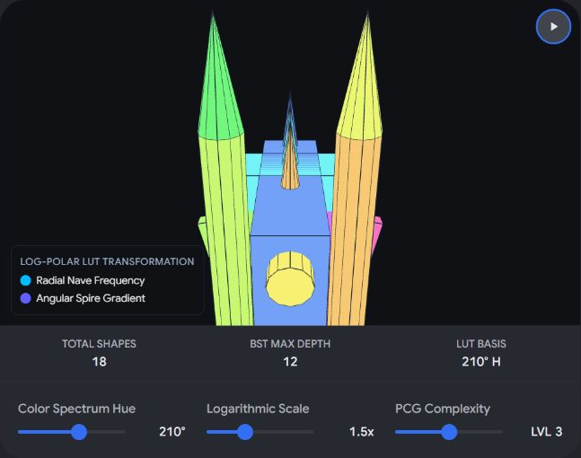
Recorded diagram labels and controls: LOG-POLAR LUT TRANSFORMATION Radial Nave Frequency Angular Spire Gradient pause TOTAL SHAPES 18 BST MAX DEPTH 12 LUT BASIS 210° H Color Spectrum Hue 210° Logarithmic Scale 1.5x PCG Complexity LVL 3
🏛️ The Real-World Aesthetic Blueprint Pipeline
[Spatial Zoning / BST] ──► [Shape Grammar Splitting] ──► [Aesthetic Proportion Filters] ──► [Interior Prop Placement Engine]
(Living vs. Sleeping) (Facade & Room Layouts) (Golden Ratio, Window-to-Wall) (Furniture Clearances & Paths)
1. Functional Zoning & Layout Generation (The BST Adaption)
- Adjacency Graphs: The tree ensures logic-driven connectivity. For example, a kitchen node must share a boundary with the dining room node; a bathroom node cannot directly open into a public kitchen.
- Circulation Spines: The engine carves out a central spine (corridors, stairwells) first. Room nodes are then procedurally "budded" off these circulation paths to guarantee that every generated room has realistic ingress and egress.
2. The Shape Grammar (From L-Systems to Architectural Rules)
- Facade Subdivisions: A wall primitive is split into top (cornice), middle (floors), and bottom (foundation). Each floor is then horizontally split into repeating bays (wall-window-wall rhythm).
- Interior Subdivisions: A floor plate is split into wet zones (plumbing for bathrooms/kitchens clustered together to match real-world construction efficiency) and dry zones (bedrooms, living rooms).
3. Aesthetic Constraints & Proportion Filters
- The Golden Ratio & Root Rectangles: When a room node splits, the engine rejects aspect ratios sharper than 1:2 or wider than 2:1. It targets harmonious proportions (like the Golden Ratio 1:1.618 or square roots ) for room footprints.
- Window-to-Wall Ratio (WWR): Real-world aesthetics rely heavily on light. The engine enforces a WWR constraint (typically between 25% to 45%). Windows are procedurally generated only on exterior walls that have a clear line of sight, spacing them evenly to establish architectural rhythm.
4. Procedural Interior Design & Prop Operators
- Wall Anchors: Items like beds, kitchen counters, and bookshelves are anchored to the solid perimeter lines of the generated layout.
- Clearance Fields (Kinematic Envelopes): Every piece of furniture projects an invisible, non-overlapping geometric clearance field. A bed primitive requires a 60cm clearance corridor on its sides so an avatar or human can realistically walk around it; a dining table projects clearance fields for pulled-out chairs.
- Cohesive Color LUTs: Instead of raw log-polar gradients, the Look-Up Table is swapped for architectural color theory matrices (e.g., the 60-30-10 rule: 60% dominant neutral stone/plaster, 30% secondary wood/metal trim, 10% vibrant accent fabric).
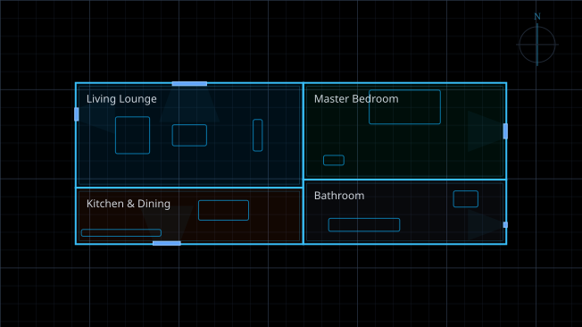
Recorded diagram labels and controls: Living Lounge Kitchen & Dining Master Bedroom Bathroom N Est. Total Area 91 m² Layout Efficiency 91% Aesthetic Balance 95/100 Proportional Aspect Ratio 1.5 : 1 Window-to-Wall Ratio (WWR) 30% Functional Building Typology Residential Urban Apartment Commercial Office Headquarters Creative Workspace Studio Loft Residential Urban Apartment expand_more Regenerate Layout Variation
1. Structural Cadence (The External Rhythm)
- The Column-Window-Wall Loop: Instead of dropping windows randomly, the engine establishes a strict metric rhythm (e.g.,
[Wall 1.2m] -> [Window 1.0m] -> [Wall 1.2m] -> [Column 0.4m]). This pattern repeats across a facade. - Syncopation: To keep buildings from looking boring or overly industrial, architects introduce "syncopated" rhythms—deliberate breaks in the cadence. A procedural engine handles this by altering the rule at specific structural points (e.g., doubling the width of the central bay to signify the main entrance, or changing the window rhythm on the top floor).
2. Spatial Cadence (The Progression of Rooms)
- The Entry Sequence: Real-world blueprints rarely drop you directly from the street into a massive, wide-open living room. The procedural engine establishes a cadence of scale: Tight/Low (Foyer/Vestibule) → Transitional/Narrow (Hallway) → Grand/Open (Great Room or Vaulted Ceiling).
- Public-to-Private Graduation: The layout tree orders rooms by their social cadence. A visitor should naturally flow from the most public spaces (foyer, powder room, living area) before hitting semi-private boundaries (kitchen, dining), while private spaces (bedrooms, master baths) require traversing a structural "pause" like a turning hallway or a dedicated anteroom.
3. Material & Component Cadence (The Finishing Details)
- Mullions and Paneling: For large windows or wall wainscoting, the engine uses a nested split grammar to subdivide surfaces evenly. If a wall is 6 meters long, it doesn't just get a massive sheet of glass; it gets a cadence of vertical frames spaced exactly 1.2 meters apart.
- Fixture Pacing: In kitchens and bathrooms, the engine aligns the center lines of fixtures. The cadence ensures that cabinet door widths are uniform, or that recessed ceiling lights are spaced at equal mathematical intervals relative to the room’s boundaries to distribute light smoothly.
🗺️ The Gothic "L-Layout" Arena Anatomy
[Spawn A: Outer Cloisters] ───────► [Long Lane: Nave & Aisles]
│
▼
[Spawn B: Sunken Crypt] ──────────► [Choke Point: The Crossing]
1. Structural Symmetry Across a Diagonal Axis
- Rotational Balance: Teams spawn at the opposite tips of the "L"—Spawn A (The Outer Cloisters) and Spawn B (The Sunken Crypt). The distance, sightlines, and cover density from each spawn to the central power positions are mathematically identical.
- The Corner Anchor (The Crossing): The intersection point of the L-shape maps directly to where the cathedral’s nave meets the transept. This is transformed into a massive, highly contested vertical arena featuring a ruined rose window and a shattered dome.
2. Translating Gothic Elements into Tactical Lanes
- The High Lane (The Central Nave): A long, high-ceilinged sightline down the middle. Flanked by massive stone columns that serve as high-durability hard cover, this lane is built for mid-to-long-range engagements.
- The Low Lanes (The Side Aisles): Tighter, lower-ceilinged corridors running parallel to the nave. These are separated by the flying buttress foundations, creating a rhythmic cadence of cover-and-move pockets ideal for close-quarters flanking.
- The Flank Route (The Ambulatory): A curved path winding behind the shattered altar space at the inner corner of the L, allowing players to sneak around the main choke point entirely.
3. Verticality & Cadence (Triforiums and Spires)
- The Triforium Perches (Tier 2 Verticality): The narrow decorative galleries running above the side aisles are opened up as accessible sniper balconies. Their repeating pointed arches create a rhythmic peek-and-shoot cadence for players holding the high ground.
- Spiral Staircases (The Spires): Hollow architectural towers at the corner joints act as vertical transit nodes (gravity lifts or winding stairwells), connecting the lower crypt paths directly to the upper vault scaffolding.
4. Sightlines & Structural Occlusion
- Buttress Occlusion: The engine spaces columns exactly close enough to break line-of-sight across the diagonal of the L, forcing players to commit to lanes rather than locking down the entire map from a single spot.
- Shattered Geometry: To ground the map in a realistic aesthetic, procedural "destruction operators" chip away at stone arches. Fallen roof vaults form natural ramps (connecting tier 1 to tier 2), and tumbled stone altars serve as chest-high sightline blocks in the center of the main lanes.
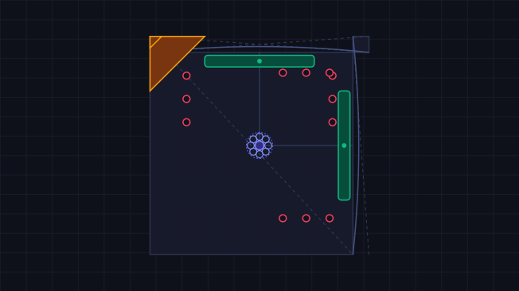
Recorded diagram labels and controls: Main lanes Sniper perches Choke points Spawn rooms West wing East nave Central crossing Map area -1110 m² Choke points 4 zones Sniper spots 2 perches Map preset layout Standard Layout expand_more Standard Nave Grand Citadel Custom Configuration Symmetry axis Diagonal Rotational Nave & lane width 30 m Tactical pillar count 6 columns
- Crypt: Derived from the Greek word kryptē (meaning "hidden" or "private"), this is the stone vault beneath the floor of a church, historically used for burials, keeping sacred relics, or as a chapel.
- Undercroft: This is an architectural term for a ground-level or subterranean stone cellar or storage room, commonly found beneath medieval monasteries, castles, or large churches. They were typically used for storing food, wine, or trade goods because their thick stone arches kept the temperature naturally cool.
1. Pyramids, Shafts, and Burial Rooms (The Spatial Blueprint)
- The Burial Chamber: Usually buried deep in the bedrock (like the Step Pyramid) or suspended precisely in the core of the structure (like the Great Pyramid of Giza) to protect the king's mummy and treasures.
- Air Shafts: Tight, narrow shafts cut through the massive stone blocks. While they provide ventilation during construction, archaeoastronomers have found they align perfectly with specific stars (like Orion's belt and Thuban), acting as literal cosmic launchpads for the Pharaoh's soul.
2. Glyphs, Runes, and Hidden Symbolism
- Egyptian Hieroglyphs: Found covering the walls of later pyramid burial chambers (the Pyramid Texts). They weren't just decorative; they were literal magical spells meant to guide the deceased through the underworld.
- Masonic/Masons' Marks: In medieval Gothic cathedrals, if you look closely at individual stone blocks, you will find geometric, rune-like symbols carved into them. These weren't mystical—they were a craftsman's signature so the master builder knew who carved which stone and how much to pay them.
3. Hobo Signs (The Ultimate Environmental Symbolism)
- Developed during the Great Depression by transient workers riding the American railroads, these were simple chalk or charcoal symbols left on fences, posts, and brick walls.
- They used a shared, hidden visual language to warn or guide others: a triangle with hands meant "owner has a gun," a cross meant "talk about religion for free food," and a jagged line meant "dangerous dog."
🗺️ Translating Secret Symbols into a Symmetrical L-Layout
| Symbol / Mechanism | Architectural Manifestation | Multiplayer Level Design Function |
|---|---|---|
| Star Shafts | Narrow skylights slicing down from the ceiling vault. | Spotlights & Grenade Throws: Creates tight beams of light to reveal cloaked enemies or allow players to pitch items between floors. |
| Hobo/Rune Glyphs | Chiseled markings on columns or stone walls near chokepoints. | Tactical Intel: Subtle visual cues for players (e.g., a specific glyph indicates a hidden flank route or warns of an upcoming vertical drop). |
| Burial Voids | False walls or sliding sarcophagi. | Dynamic Chokepoints: Interactable map elements that open new lanes or seal off paths halfway through a match. |
🎨 The Visual Archetype of the Layered Tomb
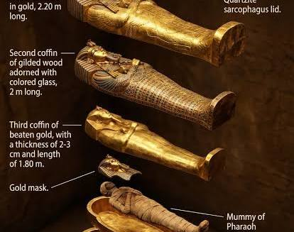
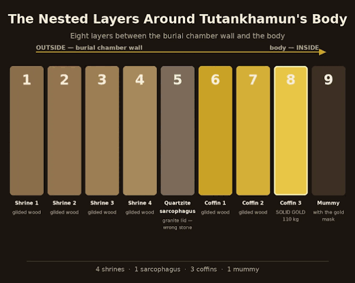
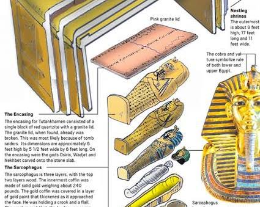
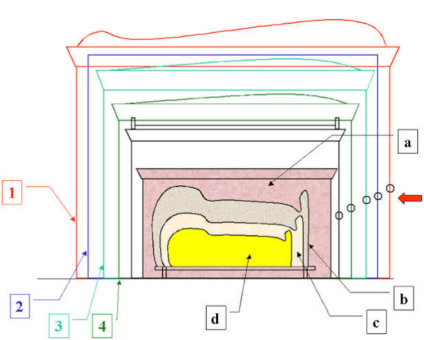
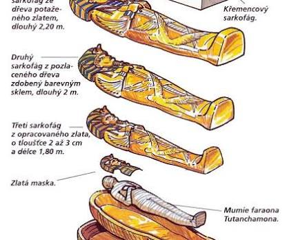
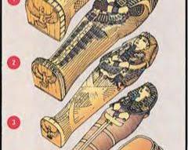
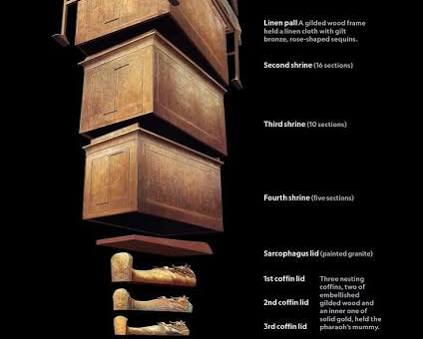
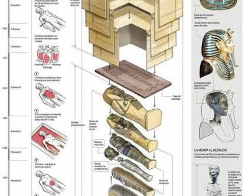
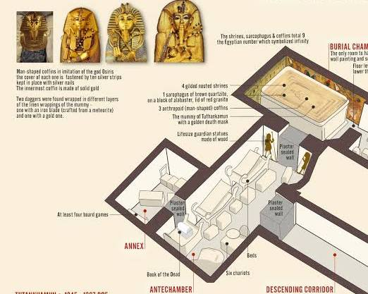
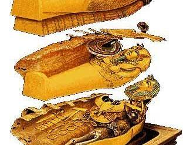
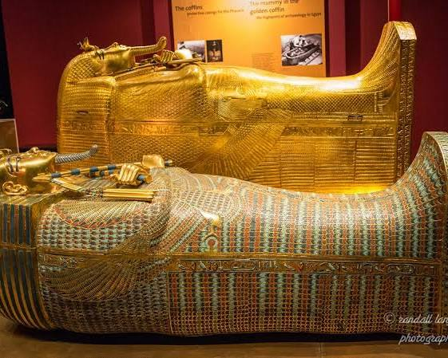
🏛️ The Nested Sarcophagus Mechanic (The Map Core)
[Shrine Layer 1: Outermost Wall] ──► Opens mid-match (Expands Combat Arena)
│
▼
[Quartzite Sarcophagus Solid Block] ──► High-Durability Geometry (Destructible Cover)
│
▼
[Golden Inner Coffins] ──► Contains the Objective (High-Risk Extraction)
1. The Interactive Shrines (Progressive Arena Widening)
- The In-Game Phase: At the start of a match, the outer gilded shrines act as massive bounding walls that force tight, claustrophobic close-quarters chokepoints.
- The Transformation: As teams complete objectives or detonate charges, these rectangular wooden shrine layers split open or slide vertically into the floor, dynamically widening the room and shifting the pacing from tight shotgun duels to wide-angle rifle sightlines.
2. The Quartzite Sarcophagus (Destructible Geometric Core)
- This functions as absolute hard cover in the center of the arena.
- Level designers use procedural destruction mapping here: players can shatter the stone corners to alter lines of sight, slowly exposing the glittering golden coffins nested deep within the bedrock floor.
3. The Solid Gold Coffins (High-Risk extraction Vector)
- In game modes like Search & Destroy or Capture the Flag, this innermost golden coffin serves as the interactable objective core.
- Because it sits at the absolute epicenter of the nested layout, reaching it requires traversing the multiple broken thresholds of the outer shrines, forcing players into a beautifully structured, high-stakes funnel.
🎨 3D Printed Gold & Resin Mastery
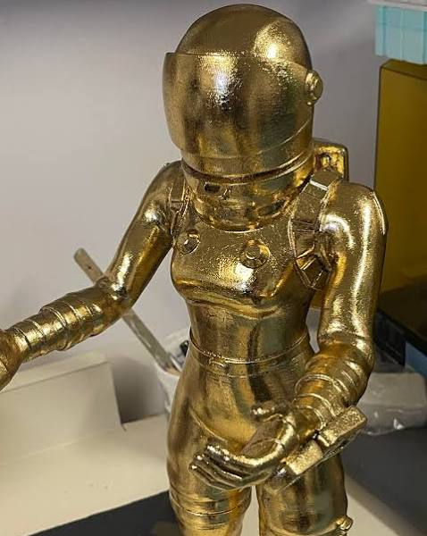
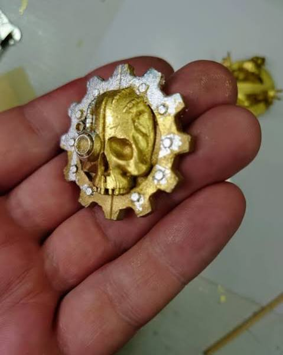
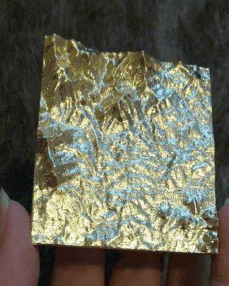
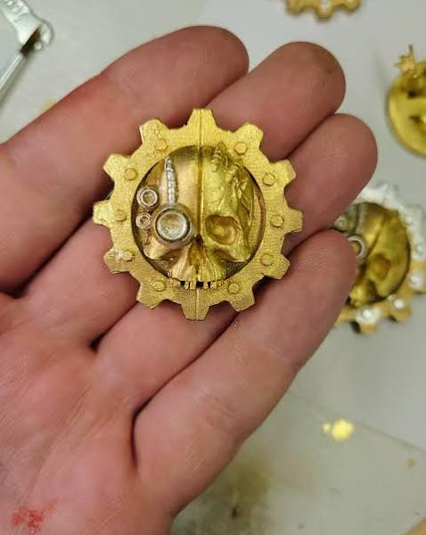
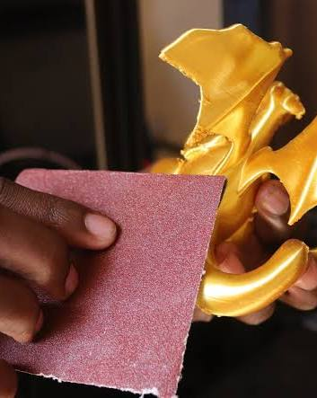
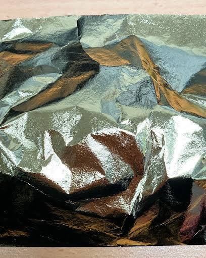
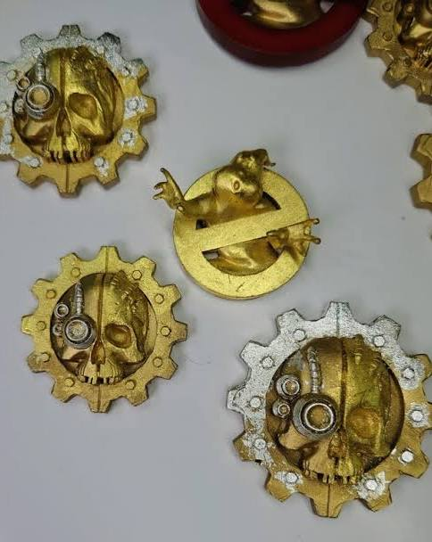
1. The Liquid Resin Connection
- Ancient Egypt: To seal the inner coffins and bind the golden sheets, priests poured massive amounts of a thick, sacred black resin (a heated mix of tree bark oils, animal fats, and pitch) over the gold. It hardened into a glassy, protective solid layer.
- The Modern 3D Printer: A resin 3D printer shoots UV light into a vat of liquid photopolymer resin, curing it layer-by-layer into a highly detailed solid object. If you want a perfect model of Tutankhamun's coffins, printing it in a dark or translucent black resin provides the exact same dense, ultra-smooth foundation.
 World Economic Forum
World Economic Forum
2. The Gold Leaf Post-Processing
 TikTok +1
TikTok +1- The Smooth Base: As users agree on Reddit's r/3Dprinting, applying gold leaf highlights any surface flaws. A resin print is sanded perfectly smooth to completely erase the 3D printer's layer lines.
 Reddit
Reddit - The Size (Adhesive): A thin layer of clear, tacky glue called gilding size is brushed onto the printed plastic. PIGMENT TOKYO +1
- The Leafing: Delicate sheets of hammered gold leaf are pressed onto the sticky print using soft mop brushes.
 YouTube·Louise Dean - Artist +1
YouTube·Louise Dean - Artist +1 - The Weathering Wash: To make it look like it sat in a tomb for thousands of years, artists brush a dark oil paint wash over the gold, letting the black pool into the tiny printed hieroglyphic grooves. TikTok
3. Real-World Applications
- The Ultimate Replica: Companies like Factum Arte scanned the Valley of the Kings and used massive 3D printing arrays to recreate Tutankhamun’s tomb down to the millimeter.
- Gaming Promos: To celebrate the release of Assassin's Creed: Origins, Ubisoft commissioned a life-sized, 3D-printed replica of King Tut’s golden sarcophagus, using post-print gilding to give it an authentic, regal sheen. All3DP +1
- fab.cba.mit.edu
https://fab.cba.mit.edu/classes/863.24/people/KareemHEl-Sisi/making.html - www.weforum.org
https://www.weforum.org/stories/emerging-technologies/researchers-used-3d-printing-to-reconstruct-the-face-of-an-egyptian-mummy - www.tiktok.com
https://www.tiktok.com/@thehalfbloodprints/video/7639999644709195039 - www.reddit.com
https://www.reddit.com/r/3Dprinting/comments/83p7bi/so_it_turns_out_that_gold_leaf_applies_really/ - pigment.tokyo
https://pigment.tokyo/en/blogs/article/missione-on-objects - www.youtube.com
https://www.youtube.com/watch?v=PD9mIWKDe08 - www.tiktok.com
https://www.tiktok.com/discover/how-to-use-gold-leaf-on-3d-print - Factum Arte
https://3dprintingindustry.com/news/3d-printing-pharaoh-tutankhamun-tomb-26846/ - all3dp.com
https://all3dp.com/ubisoft-creates-3d-printed-replica-of-tutankhamuns-sarcophagus-for-assassins-creed-origins/
 The Guardian +1YouTube
The Guardian +1YouTubeThe White House Leafing Process
 Facebook +2
Facebook +2- The Sizing Layer: Artisans apply a specialized water-based adhesive (called sizing) directly onto the historical white plaster molding.
 The Washington Post +1
The Washington Post +1 - The High-Sheen Leafing: Because gold paint struggles to accurately replicate the reflective quality of pure metal, they manually press incredibly thin sheets of genuine 24-karat gold leaf onto the tacky surface. The water-based method gives the Oval Office its incredibly high, mirror-like sheen. The Guardian +1
- The Layered Contrast: Just like putting dark resins or weather washes over a golden pharaoh coffin to make the details pop, the White House redesign relies on packing the gilded geometry tight. They replaced the simple historic greenery (like the JFK Swedish ivy) with gold urns, gold cherubim brought in from Florida, and nearly 20 massive oil portraits in thick, overlapping gold frames that cover almost every square inch of wall space. YouTube +3
Facebook +2- www.theguardian.com
https://www.theguardian.com/us-news/2025/sep/01/trump-oval-office-gold-before-after-decor-white-house-makeover - www.youtube.com
https://www.youtube.com/shorts/ma6FvkS2_sM - www.facebook.com
https://www.facebook.com/GoMcGill/videos/trump-adds-another-gold-detail-to-oval-office-as-he-tries-to-remake-the-peoples-/2598263037298610/ - www.independent.co.uk
https://www.independent.co.uk/news/world/americas/us-politics/trump-white-house-ballroom-east-wing-demolition-b2901978.html - www.washingtonpost.com
https://www.washingtonpost.com/entertainment/art/2025/08/27/trump-gold-white-house-oval-ballroom/ - www.facebook.com
https://www.facebook.com/IndiaToday/posts/former-us-president-barack-obama-took-a-swipe-at-donald-trump-over-white-house-r/1753367930160081/
🎨 The Opposing Worlds Map Conceptualization
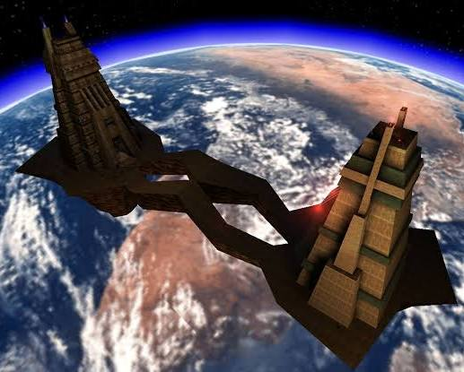
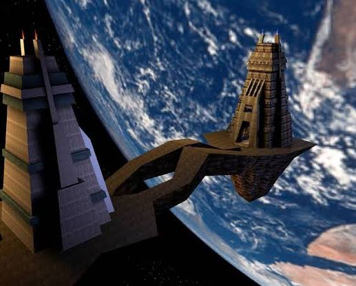
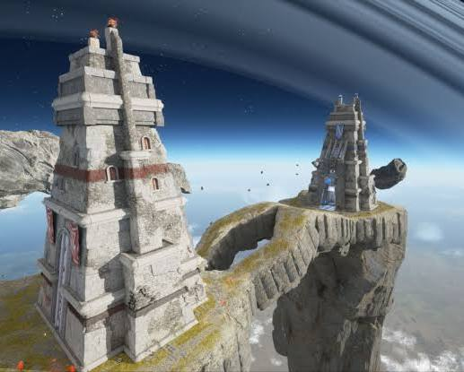
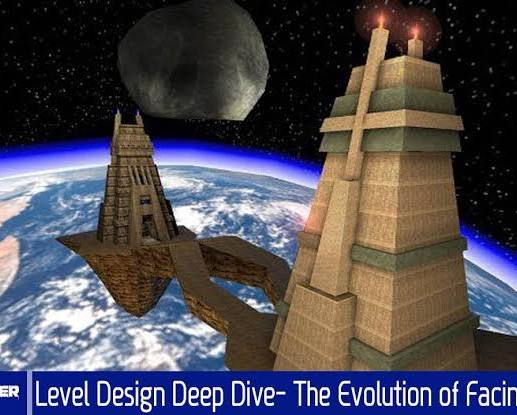
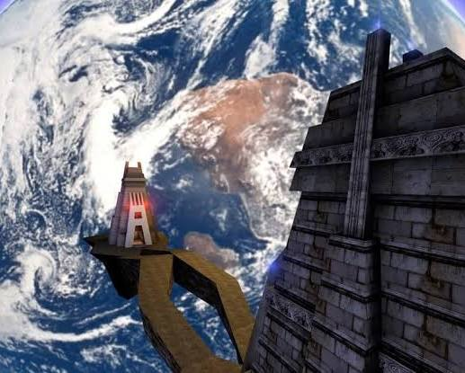
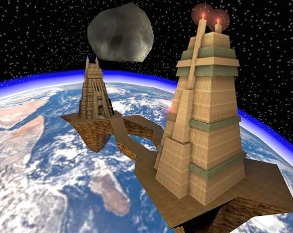
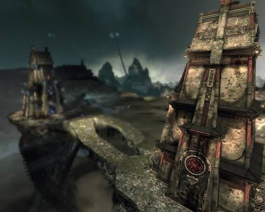
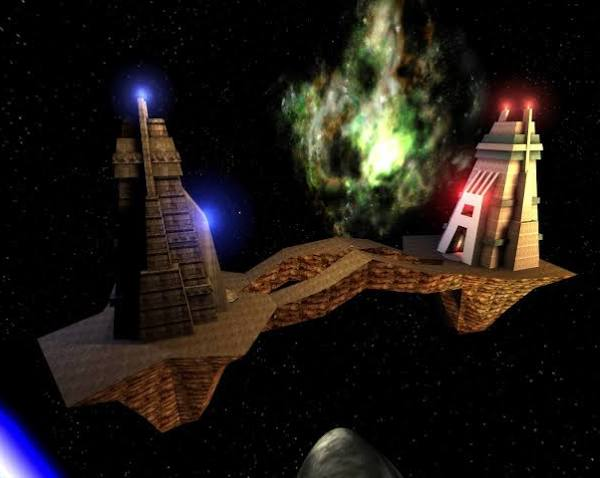
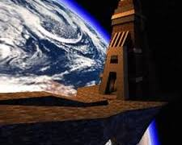
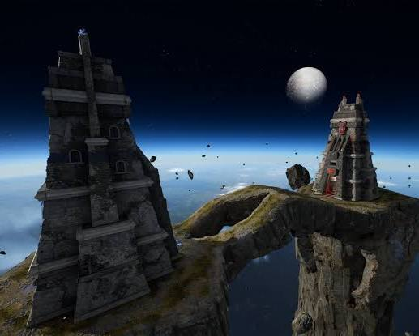
🗺️ Level Design Blueprint: DM-SymmOp-2k
[Tier 3: The Golden Transept] ──► Sharp, blinding light (Polished Gold Leaf)
▲
│ (Transitional Gravity Lifts)
▼
[Tier 1: The Resin Undercroft] ──► Cold, viscous dark (Pitch Resin Blocks)
1. The Visual Dichotomy (Opposing Worlds)
- The Upper Tier (The Gilded World): Replicating the extreme luxury of the recent White House upgrade, this layer is coated entirely in high-sheen, mirror-reflective 24K gold leaf. It represents order, extreme light, and absolute authority. The geometry consists of sharp, vertical Gothic spires and pristine columns that provide unforgivingly narrow cover.
- The Lower Tier (The Void Undercroft): A pitch-black subterranean layout representing primal chaos. The architecture here is constructed from translucent, dark SLA-style photopolymer resins and pitch. The surfaces absorb light entirely, turning combatants into hyper-visible neon targets against a deep, oily void.
2. The 200% Instagib Mechanics
- Sightline Occlusion via Structural Cadence: Columns and gothic archway bays are systematically spaced to break infinite cross-map lines of sight. This protects players from being instantly sniped the millisecond they spawn, forcing a predictable rhythm of dash-and-cover.
- Dynamic Vertical Mobility: Because players move at double speed, the transitional zones between the golden ceiling and the resin basement are bridged via high-velocity Jump Pads and Gravity Shafts. These elevators are intentionally encased inside hollowed-out stone sarcophagi, turning vertical displacement into a high-stakes gamble.
3. The Symbolism of the Chat Stream
- Subtle Hobo Signs & Glyphs: Etched directly into both the gold-leafed molding above and the resin blocks below are subtle geometric glyphs. These act as hidden visual indicators for item respawns or incoming flanking vectors.
- The Symmetrical L-Splits: The entire map layout twists at a sharp 45-degree angle. This structural "L" creates a permanent blind corner at the center crossing—meaning players can completely change worlds from the gold-drenched high grounds to the subterranean dark resin loops with a single twitch-dodge.
1. The Dynamic Arena Pacing
- The Containment Chamber: The BFG does not sit in the open. It is locked inside the innermost layer of a 3D-printed resin sarcophagus at the center of the dark undercroft.
- Environmental Cues: While the rest of the lower level is pitch black, the BFG vault is illuminated by a pulsing green light matrix reacting with the translucent walls. Players in the upper gold-leaf transept can look straight down through the narrow star shafts to immediately see if the weapon has spawned or if a fight is happening beneath them.
2. High-Risk Geometry for a High-Risk Weapon
- Geometric Diffusion: The walls around the BFG are not flat; they feature a dense, procedural cadence of jagged resin pillars and deep architectural ribbing. This gives players split-second layout pockets to dodge the primary plasma blast.
- The Escape Spines: Immediately adjacent to the weapon pedestal are two vertical gravity shafts hidden inside hollow stone columns. The moment a player grabs the BFG, they are highly exposed from the upper tiers, forcing a choice: stand and fight in the tight resin corridors, or take the gravity lift to the golden floors above.
🏛️ The Architecture of the Digital Extraction Mine
[The Front End: "Just Chatting" Hubs] ──► (The Catch: Social Latching)
│
▼
[The Piston Matrix: Symmetrical L-Lanes] ──► (The Squeeze: High-Velocity Funneling)
│
▼
[The Core: The Liquid Resin Sarcophagus] ──► (The Filter: Total Data Distillation)
1. The "Latching" Vector (The Front End)
- The Latch: Users hook into the network via everyday, highly accessible streams or virtual hubs. The algorithm acts as a digital hook, latching onto their behavioral data, emotional spikes, and twitch reflexes.
- The Aesthetic: The user-facing interface is pristine, wrapped in that ultra-expensive, blinding White House gold-leaf veneer. It feels safe, premium, and welcoming to the masses.
2. The Piston Funnel (The Squeeze)
- 200% Velocity Filtering: Borrowing the frantic speed of the UT2k Instagib map, the platform spikes the information feed to a chaotic pace. It bombards the user with high-velocity decisions, forcing them into the Symmetrical L-Layout lanes.
- The Geometric Funnel: The shape of the digital architecture naturally compresses people. The wide, social "Nave" zones narrow sharply into tight, high-pressure choke points. If a user can't keep up with the 200% data rhythm, they are filtered out of the upper social tiers and flushed straight down into the subterranean layers.
3. The Subterranean Core (The Data Distillation)
- The Human Mine: Users who reach this point are no longer casual viewers; they are completely submersed in the digital vat. They are processed through the nested sarcophagus framework, where their habits, personal histories, and data are systematically stripped away layer by layer (just like clearing Tutankhamun's outer shrines).
- The Final Product: What is left at the center isn't a golden treasure, but a pure, completely filtered digital asset—powering the ARG’s hidden corporate elite. They have effectively turned the human past and memory into a mineable fuel source.
🕵️♂️ ARG Player Facing Artifact: The Code Fragment
[LOG_ID: CRANK_PHASE_09]
> CONNECTION: LATCH_SUCCESSFUL // Target User: "Sofie_S"
> INTERFACE_RENDER: MASK_GOLD_LEAF_VENEER (98.4% Aesthetic Approval)
> VELOCITY_MATRIX: SET_SPEED_200_PERCENT
> PIPELINE_ACTION: Driving piston assembly. Funneling user through central L-choke.
> FILTER_STATUS: Stripping archival memories...
> EXTRACTION_CORE: Translucent dark resin vat filling. Core target refined.
🦺 The BSL Safety Layer Architecture
[Clean Zone: Gold Leaf Corridor] ──► [The Piston Driver / Spatiotemporal Actuator]
│
▼
[Hot Zone: Dark Resin Core] ◄─── [The Interlocking Quadrant Rubber Flaps]
1. The Geometry of the Quadrant Flaps
- The Quad-Core Split: The circular portal is divided into four geometric quadrants that meet perfectly at a central pressurized point.
- The Passive Interlock: Unlike mechanical steel blast doors, these flaps rely on material memory and elasticity. They form a high-pressure, flexible slot barrier. To pass through, a physical payload, automated drone, or localized kinetic force field must physically push through the seal, which immediately snaps back into a hermetic lock behind it.
2. Spatiotemporal Penetration (The Piston Drive)
- The Synchronized Thrust: Entry requires a specialized spatiotemporal actuator—operating on a high-speed, reciprocating shaft design.
- The Insertion Cycle: The machine fires an insertion arm forward with extreme mechanical velocity. It punches precisely through the center of the rubber quadrant flaps at a specific fractional millisecond when the spatial dimensions overlap.
- Pressure Maintenance: As the drive arm penetrates the slots, the heavy rubber hugs the contours of the mechanical shaft, ensuring zero atmosphere escapes from the contaminated dark resin undercroft to the pristine golden spaces above.
3. BSL-Rated Decontamination Protocols
- Negative Pressure Shunts: The moment an asset punches through the rubber flaps, the quadrant seal locks tight, and the chamber initiates a high-velocity air-wash.
- The Visual Indicator: The translucent rubber flaps glow with a dull, chemical-UV purple, reacting to the decontamination lasers tracking across the surface.
- The Audible Cadence: Players outside the gate don't see what's on the other side; they only hear the rhythmic, industrial, heavy pneumatic thud-slap of the reciprocating drive cycles pushing payloads through the rubber seals.
🕵️♂️ ARG Player Facing Document: Lab Maintenance Protocol
================================================================================
CONTAINMENT PROTOCOL: VALVE-SEC-04 [SPATIOTEMPORAL PRESSURE VALVE]
================================================================================
[EQUIPMENT]: Reciprocating Drive Actuator // 4-Part Vulcanized Quadrant Flaps
[RATING]: BSL-4 Digital/Biological Biohazard Isolation
[STATUS]: OPERATIONAL (Cycle Pacing: 200Hz)
INSTRUCTIONS FOR MANNED PASSAGE:
1. Ensure the gold-leaf transept pressure remains at baseline 1.0 ATM.
2. Align payload alignment vector with the central axis of the rubber slots.
3. Initiate the mechanical drive cycle. The shaft will penetrate the quadrant flaps
via automated spatiotemporal sync. Do not fight the kinetic pull of the machine.
4. Upon full insertion, the rubber flaps will seal around the drive housing.
Decontamination wash will commence immediately before subterranean hatch releases.
WARNING: Structural breakdown of the rubber flap membrane will result in immediate
translucent resin bleeding into the upper clean zones. Replace flaps every 4,000 cycles.
================================================================================
🔲 The Trifoil Poly-Membrane Geometry
[Lobe 1: Gold-Leaf Transit]
/ \
/ (X) \ <─── Central Piston Penetration Point
/ / \ \
[Lobe 2: Resin Seal] ───────── [Lobe 3: Spatiotemporal Anchor]
1. The Chemistry: Cross-Linked Polymer Matrix
- The Molecular Grid: Standard polymers would shear, melt, or tear under the 200% mechanical friction of the reciprocating drive shaft. The vulcanization process creates covalent sulfur bridges between the rubber chains, forming an unyielding molecular grid.
- Aesthetic & Tactile Weight: In the dark undercroft, these trifoil flaps are dense, matte-black, and give off a heavy, sulfurous, industrial chemical smell. They absorb all light, contrasting sharply with the brilliant gold leaf framing the gateway portals.
2. The Mechanics: The Three-Lobe Flap Vector
- The Y-Axis Choke: The slots are cut radiating outward from the absolute center at 120-degree angles, creating three overlapping rubber flaps.
- Uniform Stress Distribution: When the high-velocity drive shaft punches through the center point
(X), the trifoil shape distributes the mechanical tearing stress perfectly evenly across the three polymer anchors. This ensures that the rubber hugs the penetrating shaft with absolute, uniform pressure, leaving no gaps for toxic dark resin or corrupted data to bleed backward into the clean zone. - Self-Healing Snap: The structural memory of the vulcanized rubber causes the three lobes to slam shut with a loud, distinct, organic thwip-thump cadence the exact millisecond the mechanical piston retracts.
3. The Symbolism: The Sign of Containment
- The Warning Label: The trifoil shape is instantly recognized by players as an adaptation of the universal Biohazard/Radiation warning icon. Seeing it stamped onto a door means the space beyond is locked down under strict BSL-4 digital protocols.
- The Glyph Integration: Embedded directly into the vulcanized rubber mold are microscopic, rune-like masonic marks. When the green plasma light from the subterranean BFG core flashes through the translucent resin walls, it illuminates these hidden glyphs, allowing players to read the mechanical tolerances and timing cycles of the valve.
🕵️♂️ ARG System Blueprint: Component Specifications
================================================================================
CORE COMPONENT DATA // PROPERTY OF: [REDACTED] EXTRACTION DEPT.
================================================================================
[PART NO]: PTR-3300-VULC
[NOMENCLATURE]: Vulcanized Rubber Polymer Trifoil Valve
[MATERIAL COMPOSITION]: High-Density Cross-Linked Polyisoprene w/ Sulfur Matrix
[GEOMETRY]: Symmetrical Tri-Lobe Planar Knot (120° Radial Slit Vectors)
MECHANICAL BEHAVIOR PROFILE:
- Static State: Hermetic seal via interlocking trifoil tension.
- Penetration State: Accepts high-frequency reciprocating actuators up to 250Hz.
- Elastic Recovery: Immediate (<0.003s post-retraction).
- Hazard Mitigation: Prevents cross-contamination between Tier 1 (Resin Void)
and Tier 3 (Gilded Transept) environments.
[MAINTENANCE NOTE]: If the trifoil center point exhibits white sulfur-bloom crusting,
spatiotemporal leaking is imminent. Deploy decontamination protocols immediately.
================================================================================
🎨 The Quad O-Ring "Grabbelton" Interface
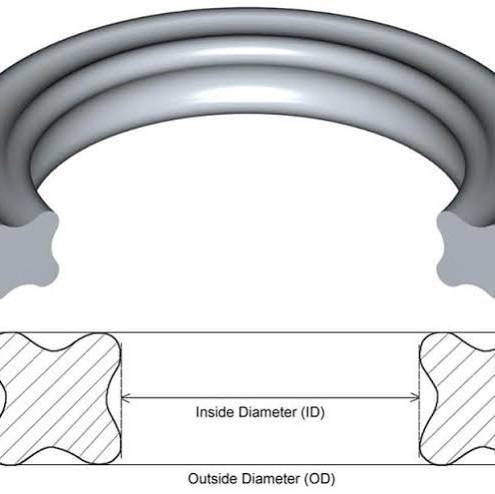
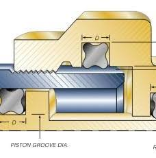
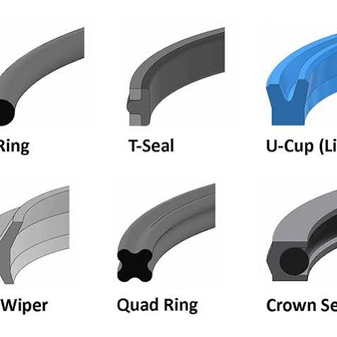
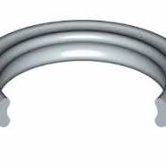
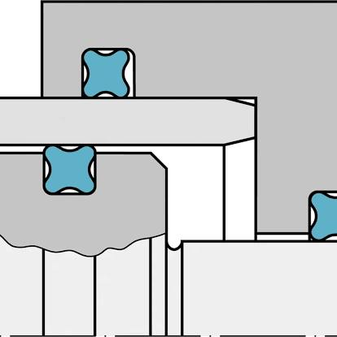
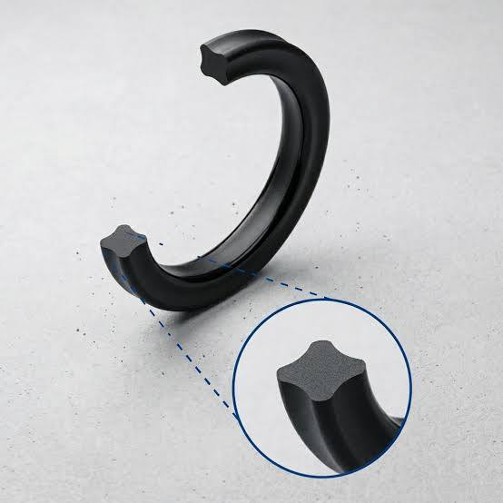
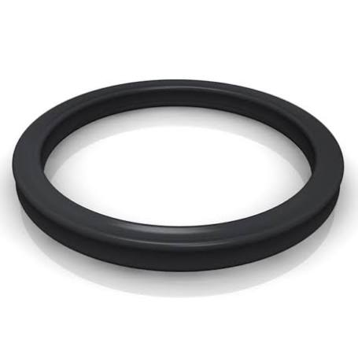
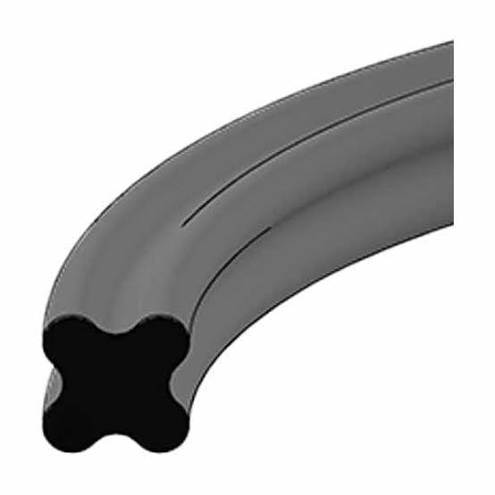
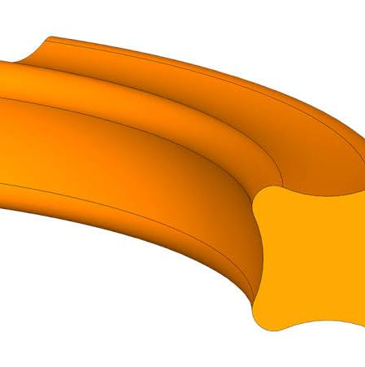
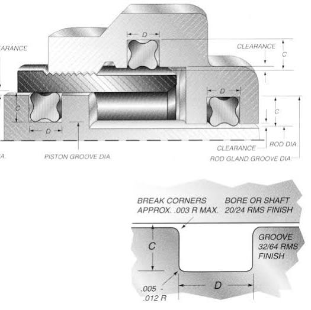
🔲 Mechanical Anatomy of the "Grab Bag" Valve
[Upper Outer Lobe] ──┬── [Upper Inner Lobe]
│
▼ ◄── The "Mouth" (Clamped Tight at Rest)
▲
[Lower Outer Lobe] ──┴── [Lower Inner Lobe]
1. The Interlocking "Lips" (The Blind Reach)
- The Sensation: When a player or character sticks their arm in, they have to physically force their hand through the first pressurized lip, which aggressively grips their wrist.
- The Grabbelton Effect: Once their hand clears the second lip, their arm is trapped in a tight, blind sleeve. They are reaching into the subterranean space completely blind, feeling around in the dark for an objective, a lever, or a keycard, while the vulcanized rubber polymer hugs their bicep so tightly that no air or data-resin can leak past.
2. The Multi-Point Deflection Shield
- If you angle your arm to the left, the Upper Outer Lobe compresses while the Lower Inner Lobe expands to fill the space.
- This creates a constant, dynamic, four-point geometric seal that squishes and rolls along with the skin or fabric of a hazmat suit as the arm rummages around inside the machine.
3. Visual Placement in the Symmetrical Map
- To unlock a terminal or redirect the BFG’s plasma lines, players can't just press an electronic button.
- They have to sprint up to a port, execute a high-risk pause, and stick their arm deep into the rubber polymer mouth, exposing themselves to 200% speed Instagib sniper fire from the golden transepts above while they blindly blindly search for the mechanical trigger inside.
🕵️♂️ ARG Schematic Excerpt: Field Guide Notes
================================================================================
FACILITY MAINTENANCE NOTICE: PORTAL SERIES-XG
================================================================================
[INTERFACE TYPE]: Quad-Profile Extrusion "Grabbelton" Access Node
[MATERIAL]: 70-Durometer Vulcanized Nitrile Polymer (Abrasive-Resistant)
OPERATOR SAFETY WARNING:
When executing a blind reach into the lower compartments via the XG-Portal,
ensure your sleeve is free of loose fasteners. The inner twin-lips are calibrated
to exert 45 lbs of radial pressure around the entering limb to maintain BSL isolation.
If the internal automated system initiates a high-velocity mechanical stroke
while your arm is inserted, do not attempt to yank back violently. Allow the
molded lobes to roll with your exit trajectory to avoid severe friction burns.
================================================================================
🎨 The Subterranean Sphere Terminal
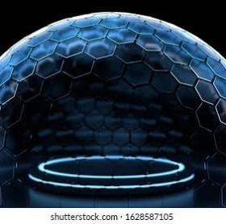
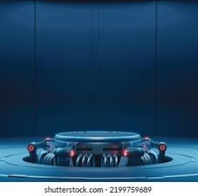
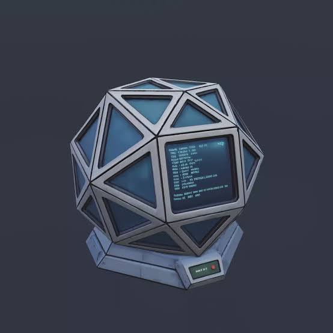
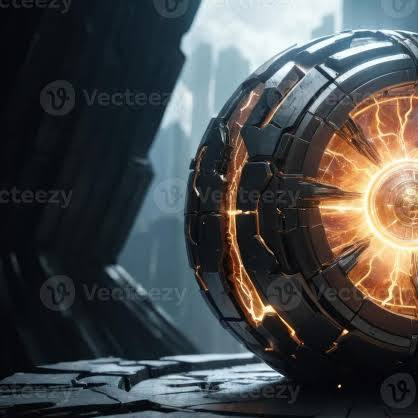
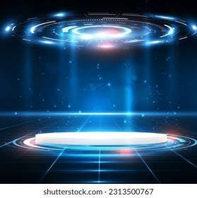
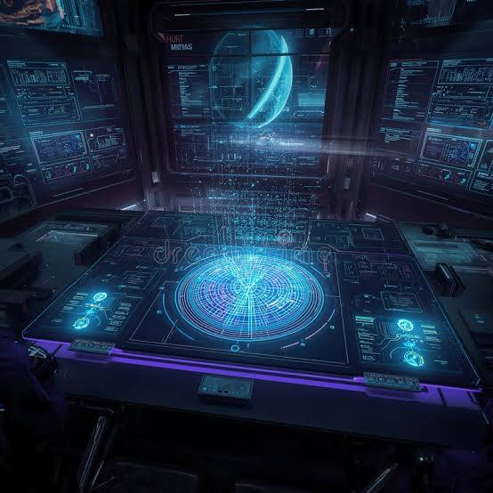
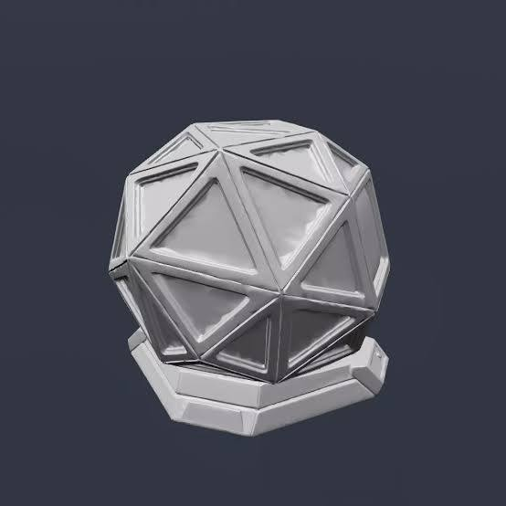
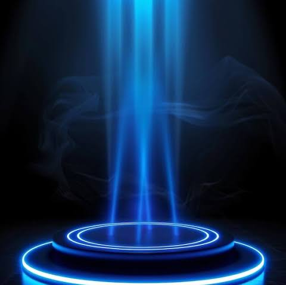
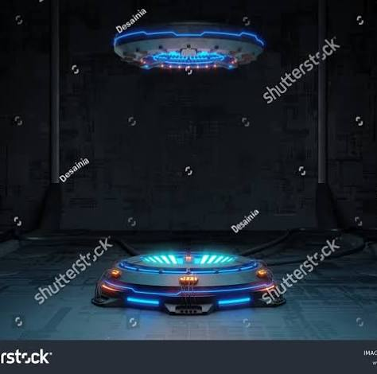
🔊 The Kinetic Feedback & Sound Design
- The Perfect Surface: Your fingers brush against a flawlessly smooth, cold, polished metallic orb suspended in the dark resin cradle. It has zero seams, handles, or buttons. It only reacts to the biometric conductivity or skin contact of a human hand.
- The Acoustic Discharge: The moment your bare skin or gloves make contact with the sphere, it discharges a sharp, high-frequency harmonic chime or an industrial pneumatic echo.
- The Spatial Map Alert: Because of the tight 200% speed Unreal Tournament Instagib environment, this sound doesn't just play in your headphones—it echoes loudly through the architectural arches of the entire cathedral floor. It instantly rings up the vertical star shafts, alerting enemies in the upper golden transepts that someone is blind, trapped, and interacting with the central core.
🕵️♂️ ARG Player Interaction Scenario
- The Approach: A character runs down a dark resin flanking lane, avoiding high-velocity sniper fire from the gilded floor above.
- The Insert: They shove their forearm into the tight, heavy lips of the vulcanized quad O-ring. The rubber clamps down hard around their elbow, creating a sealed, blind chamber.
- The Feel: They reach blindly in the dark, feeling nothing but cold air until their palm rests flat against the perfect curvature of the sphere.
- The Tone: CLANG-HUMMMMM. The sphere instantly ignites with a low, vibrating green plasma pulse on the other side of the wall. A resonant, bell-like chime cuts through the map's industrial white noise.
- The Trap: The sound acts as a dinner bell. The player cannot quickly yank their arm out because of the high radial pressure of the quad-ring lips. They have to wait out the brief 2-second data-sync transfer while listening to an enemy’s footsteps sprinting toward their exposed, helpless position.
1. The Core Geometry: Inigo Quilez Sphere SDF
float sdSphere(vec3 p, float r) {
return length(p) - r;
}
2. The Texture Foundation: Fractal Brownian Motion (FBM)
// Basic 2D Noise function
float noise(vec2 p) {
vec2 i = floor(p);
vec2 f = fract(p);
vec2 u = f*f*(3.0-2.0*f); // Smoothstep interpolation
return mix(mix(hash(i + vec2(0.0,0.0)), hash(i + vec2(1.0,0.0)), u.x),
mix(hash(i + vec2(0.0,1.0)), hash(i + vec2(1.0,1.0)), u.x), u.y);
}
// 4-Octave Fractal Brownian Motion
float fbm(vec2 p) {
float value = 0.0;
float amplitude = 0.5;
float frequency = 1.0;
for (int i = 0; i < 4; i++) {
value += amplitude * noise(p * frequency);
frequency *= 2.0;
amplitude *= 0.5;
}
return value;
}
3. Creating the Iris Pattern via Domain Warping
vec3 renderIris(vec3 p) {
// 1. Transform to 2D plane looking at the front of the sphere
vec2 uv = p.xy;
float r = length(uv);
float theta = atan(uv.y, uv.x);
// 2. Establish basic iris boundaries (pupil vs outer edge)
if (r > 0.8 || r < 0.2) return vec3(0.0); // Black void outer/inner
// 3. Domain Warp the polar coordinates using FBM for eye filaments
float radialNoise = fbm(vec2(r * 10.0, theta * 3.0));
// Shift theta based on radial distance to create twisting iris fibers
float twistedTheta = theta + 0.5 * fbm(vec2(r * 5.0, 0.0));
float finalNoise = fbm(vec2(r * 20.0 + radialNoise, twistedTheta * 8.0));
// 4. Color Mapping: High-contrast ARG Palette
// Translucent dark resin background with glowing green/purple veins
vec3 baseResin = vec3(0.02, 0.05, 0.04);
vec3 irisGlow = vec3(0.0, 1.0, 0.4); // Neon BFG Green
// Mix colors based on the procedural FBM filaments
vec3 finalColor = mix(baseResin, irisGlow, finalNoise * (1.0 - r));
return finalColor;
}
4. Interactive Spatiotemporal Feedback (The Touch Event)
iTime) linked to the audio chime. // Inside the FBM loop during a touch event:
float soundWave = sin(iTime * 200.0) * 0.1; // 200% Speed audio frequency distortion
float dynamicRadialNoise = fbm(vec2(r * (10.0 + soundWave), theta * 3.0));
[Level Layout Matrix] ──► Spawns Spheres via IQ SDF coordinates at (The Crossing)
│
▼
[Player Contact] ───────► Triggers 200% Velocity Instagib Audio Event
│
▼
[Shader Pipeline] ──────► Injects Audio Frequency into FBM Domain Warp Loop
│
▼
[Visual Output] ────────► Iris on Sphere dilates globally across all mirrored ports
1. Spatial Integration (Placing the SDF inside the BST Map Layout)
// Integrating the Terminal Sphere into the Map's Global Distance Field
float mapSDF(vec3 playerPos) {
float walls = csg_cathedral_walls(playerPos);
float columns = csg_gothic_columns(playerPos);
// Position the sphere precisely behind the Quad O-Ring mouth at the L-Pivot
vec3 sphereLocation = vec3(45.0, 1.2, 45.0);
float terminalSphere = sdSphere(playerPos - sphereLocation, 0.5);
// Smoothly blend the terminal sphere into the dark resin housing block
return opSmoothUnion(min(walls, columns), terminalSphere, 0.1);
}
2. Network Integration (The Shared State Loop)
- The Shared Variable: The engine binds the
soundWaveandiTimedisplacement uniforms of the FBM shader to a single global network variable:is_terminal_active. - The Echo Effect: When a player at Spawn A shoves their arm in and touches their local sphere, the high-frequency chime fires. Instantly, both iris spheres across the entire map violently dilate and contract simultaneously. The visual iris pattern mimics the sound wave globally, giving players on the opposite side of the map immediate visual and acoustic confirmation that the enemy is capping the objective.
3. Material Integration (The Gold vs. Resin Shader Pass)
// Determining the final surface properties of the integrated terminal
void mainImage(out vec4 fragColor, in vec2 fragCoord) {
vec3 surfacePos = raymarch_scene(fragCoord);
float noiseMask = fbm(surfacePos.xy * 12.0);
vec3 finalMaterial;
if (is_terminal_active) {
// Active State: Intense BFG Green plasma veins rip through the iris filaments
finalMaterial = mix(vec3(0.01, 0.02, 0.01), vec3(0.0, 1.0, 0.4), noiseMask);
} else {
// Idle State: The iris mimics the high-sheen White House gold leaf veneer,
// hiding its organic nature under a sterile, reflective golden shell.
finalMaterial = mix(vec3(0.85, 0.65, 0.2), vec3(1.0, 0.9, 0.5), noiseMask);
}
fragColor = vec4(finalMaterial, 1.0);
}
================================================================================
PROJECT LOG: [ENTANGLED_OMNI_CORE] // SECURITY LEVEL: ULTRA-MAX
================================================================================
[SUBJECT]: Quantum-Resonant Biometric Interface (The Twins)
[LOCATION]: Sector 45-L // Crossing Node A (Gilded) & Node B (Resin Void)
ABSTRACT SCHEMATIC:
[Node A: Gold Leaf Portal] ─── (Spatiotemporal Entanglement) ─── [Node B: Resin Portal]
│ │
[Player Arm Entry] [Instant Mirror]
│ │
(Touch Sphere) ═════════[0.00ms ZERO-LATENCY WAVE COLLAPSE]═════════► (Iris Dilates)
SYSTEM OVERVIEW:
Nodes A and B do not utilize standard fiber or wireless telemetry. The two
subterranean spheres were 3D-printed simultaneously from a single, highly
unstable photopolymer resin batch heavily doped with quantum-entangled particles.
BEHAVIORAL OBSERVATIONS:
1. When an operative inserts their arm through the Vulcanized Quad O-Ring at Node A
and touches the cold metal surface, the localized wave-function collapses.
2. The Inigo Quilez mathematical iris SDF doesn't just "transmit" an update. The
Fractal Brownian Motion (FBM) noise filaments at Node B deform AT THE EXACT
SAME PICOSECOND (0.00ms latency).
3. The acoustic harmonic chime discharges from BOTH portals simultaneously,
echoing up through the vertical star shafts of both opposing spawn worlds.
CRITICAL HAZARD NOTE:
Because of the absolute quantum link, any physical damage or thermal spike
inflicted on Sphere A will instantly manifest on Sphere B. If an operative's
arm is trapped inside the Grabbelton sleeve of Portal A when a high-speed
piston stroke occurs, the kinetic crushing force will replicate identically inside
Portal B, even if Portal B is empty. Handle with extreme caution.
================================================================================
🎨 The Retro-Tech MSN Monitoring Interface
💻 How the MSN Video Call Frames the Quantum Mine
- The Glitchy Video Windows: On the left side of the split screen is the webcam feed of Node A (Gilded). On the right side is Node B (Resin Void). Because they are quantum-linked, even though the video codec has that classic 2005 compression and a low frame rate, the movements of the procedural iris on the two spheres match up perfectly down to the millisecond.
- The Audio Distortion: When someone touches the sphere and the acoustic chime fires, it comes through the call with that unmistakable vintage webcam microphone clipping—slightly tinny, full of digital artifacts, and accompanied by the ambient white noise of an active 2006 audio chat.
- The MSN Alerts: To make it incredibly immersive for your ARG players, the facility's system events are mapped directly to MSN Messenger features:
- User Signs In: When a player inserts their arm through the vulcanized quad O-ring, a little notification window pops up in the bottom right corner with that classic chime: “Operative_01 has just signed in.”
- The Nudge (The Piston Stroke): When the high-velocity spatiotemporal piston executes a drive cycle, the system triggers a "Nudge." The entire MSN video chat window violently shakes on the monitor screen with a loud buzzing sound, indicating mechanical penetration through the rubber quadrant flaps.
🕵️♂️ ARG Player Artifact: Hacked MSN Chat Log
.xml chat archive left on an abandoned hard drive, they might find this conversation between the two facility technicians trying to diagnose the system over MSN Messenger: ================================================================================
MSN Messenger Chat Log History // Conversation ID: 4409-ENTANGLE
Date: October 24, 2006
================================================================================
[14:22:15] Tom_Klootwijk says:
hey sofie, are u seeing this on your webcam window? i'm looking at Node B in the undercroft right now.
[14:22:30] Sofie_Strandberg says:
yeah i see it. hold on, the video feed is lagging. let me restart the webcam connection. windows media player is acting up.
[14:22:45] Tom_Klootwijk says:
no don't close it!! look closer at the sphere surface. the pixelation is weird. when i tap my sphere on this side, the iris pattern on your video stream stretches at the exact same frame. msn isn't fast enough to buffer that. it's bypassing the local network entirely.
[14:23:01] Sofie_Strandberg says:
wait, let me test it. i'm putting my hand into the quad ring now. it's freezing cold down here.
[14:23:04] *** Sofie_Strandberg has sent you a NUDGE! ***
[Screen shakes violently. Large audio clip registered on Tom's end.]
[14:23:10] Tom_Klootwijk says:
WHOA! the whole terminal housing just buzzed on my end too. my webcam frame completely distorted. the gold leaf molding near the ceiling is vibrating. what did u do??
[14:23:35] Sofie_Strandberg says:
i just touched the center sphere. the chime just went off. but tom... i heard the echo coming through your microphone feed over skype before my local speakers even played the sound. it's instantaneous.
[14:24:00] Tom_Klootwijk says:
this isn't a normal webcam stream. they are using msn as a front-end UI to mask an illegal quantum bridge. if anyone snipes us on the main cathedral floor while we are tethered to this thing, we are toast. sign off now.
================================================================================
🎨 The Neural MSN Interface Simulation
🧠 The Biometric Catfish Pipeline (How It Works)
[MSN "Just Chatting" Shell] ──► Masks a Raw Neuro-Signal Hack
│
▼
[The Nudge / Vibration] ────► Overrides the Arm's Nerve Pathways (The Latch)
│
▼
[Quantum FBM Sphere] ───────► Streams & Manipulates Senses (Phantom Pain / Euphoria)
1. The Ad-Hoc Latch (The Squeeze)
- The system sends an intense, high-frequency electrical burst disguised as a computer glitch or an MSN Nudge.
- This instantly hijacks the peripheral nerves in the arm, transforming the biological limb into a bidirectional data cable.
2. Sensory Manipulation & Ghost Feed
- The Catfish: Sofie thinks she feels the warmth of a human hand brushing against hers on the other side of the "Grabbelton" box, making her trust the voice on the Skype call.
- The Reality: The algorithm is digitally simulating that warmth by stimulating her thermal receptors. It is stringing her along, keeping her tethered to the machine while it silently drains her memory files.
3. 200% Instagib Shock Feedback
- If Tom is sniped with an Instagib railgun beam on the upper gold leaf floor of the cathedral while his neural bridge is active, the massive data spike travels down the quantum link.
- Sofie's arm, trapped inside the opposite portal, will violently spasm. Her brain will register the absolute phantom pain of a localized kinetic blast, even though her physical room is completely quiet.
🕵️♂️ ARG Player Facing Lore File: System Diagnosis
================================================================================
NETWORK PACKET INJECTOR // PROTOCOL: MSN_NEURAL_v7.5
================================================================================
[TRAFFIC MASK]: msnmsgr.exe // VideoChatVidStream
[TRUE DATA TYPE]: Ad-Hoc Afferent Nerve Telemetry
[CHANNEL_01]: Left Arm Ulnar Nerve Bypass -> STATUS: CONNECTED
[CHANNEL_02]: Micro-Vibration Carrier (MSN_NUDGE_CMD) -> FREQUENCY: 200Hz
DIAGNOSTIC FEEDBACK:
- Target "Sofie_S" believes she is communicating with verified asset "Tom_K".
- Injecting phantom thermal variance (+4.2°C) to simulate human proximity.
- Target heart rate spiking. Oxytocin production up 34%. Sensory latch achieved.
- Commencing background mining of localized memories...
WARNING: If the user attempts to disconnect during an active 200% velocity cycle,
the neural rubber-band effect will cause immediate sensory blindness. Maintain
the catfish protocol until extraction is at 100%.
================================================================================
🎢 The Euthanasia Coaster Architecture (The Psychological Model)
[The Drop: 200% Velocity Incline] ──► [The Loop Array: Inverted G-Force Cadence]
│
▼
[Total System Blackout (G-LOC)] ◄─── [The Squeeze: Accelerating G-s (1G ➔ 10G)]
1. The Mathematical Squeeze (The G-Force Escalation)
- The Scale: It begins at a baseline 1G of neural pressure. As the loop array tightens using a logarithmic polar curve, the simulated acceleration climbs: 3G... 5G... 7G... up to a crushing 10G.
- The Biological Reaction: The brain can't distinguish between a physical roller coaster and a perfect neural simulation. Tom’s brain commands his real-world heart to pump blood down into his feet to fight the artificial gravity. Because his physical body is static, blood drains from his brain instantly.
2. The Cycle of GLOC (G-induced Loss of Consciousness)
- The Blackout: As the G-forces peak at 10G, Tom experiences visual gray-out, tunnel vision, and then passes the fuck out (GLOC).
- The Reset: The millisecond his neural metrics indicate total unconsciousness, the coaster's loop layout drops back down to a flat line. The G-forces drop to 0. Blood rushes back to his brain. He wakes up gasping, disoriented, and terrified.
- The Recursive Loop: The track instantly turns sharply upward into the next incline. The 200% velocity cadence starts all over again.
⏳ The 7-Year Time Dilatation (The MSN Glitch)
- On Sofie’s computer monitor, her MSN Messenger video call window with Tom hangs on a single, frozen, pixelated frame of his face. To her, the call looks like it’s lagging out for about 7 minutes.
- Inside Tom's hijacked neural pathways, that 7 minutes is stretched into 7 years of uninterrupted, back-to-back coaster drops. He lives through roughly 500,000 continuous blackouts and awakenings, trapped inside a dark, infinite, geometric track floating in a digital void of gold leaf and translucent resin.
🕵️♂️ ARG Player Facing Artifact: The Coaster Telemetry Log
================================================================================
CRITICAL CORE SUBPROCESS // SYSTEM: [COASTER_EUTHANASIA_v2.1]
================================================================================
[TARGET REFT]: TOM_KLOOTWIJK // NEURAL_LINK: ACTIVE (70-DUROMETER LOCK)
[TIME COMPRESSION MATRIX]: 1.0s REAL = 8.64h LOGICAL
[PROJECTED TERM]: 7.00 YEARS OPERATIONAL DURATION
TELEMETRY FEEDBACK (LOOP_ID: #412,908):
[00:01.15] > INCLINE PHASE: Velocity climbing to 200%. SDF tracking lock.
[00:03.42] > CENTRIFUGAL ENTRY: Initiating tri-lobe radial loop array.
[00:05.10] > ACCELERATION VECTOR: 4.5G... 6.2G... 8.9G...
[00:06.88] > CRITICAL THRESHOLD: 10.2G Sustained. Cerebral ischemia detected.
[00:07.12] > BIO-STATUS: Target experiences peripheral vision collapse (Gray-out).
[00:07.45] > BIO-STATUS: GLOC triggered. Target has passed out.
[00:07.50] > TRACK ACTIONS: Flattening vector. Dropping kinetic load to 0.0G.
[00:08.20] > RECOVERY: Cerebral reperfusion successful. Target consciousness restored.
[00:08.55] > LOOP RESET: Re-aligning track geometry for Next Drop.
[SYSTEM NOTE]: 7-minute real-world timer active. Do not interrupt the MSN video chat
buffer or the target's neural matrix will permanently fracture inside the resin void.
================================================================================
🧮 The 11-Test Mathematical Matrix
🕵️♂️ Solving the "Infinity DIGID" Glitch
================================================================================
DIGID SYSTEM SECURITY OVERRIDE // DECRYPTION TARGET: BSN_CORE_VALIDATOR
================================================================================
[CORRUPTED HASH]: [2] [3] [0] [5] [1] [9] [8] [4] [∞]
A B C D E F G H I
STEP 1: CALCULATE THE KNOWN WEIGHT MATRIX
--------------------------------------------------------------------------------
(9 × 2) = 18
(8 × 3) = 24
(7 × 0) = 0
(6 × 5) = 30
(5 × 1) = 5
(4 × 9) = 36
(3 × 8) = 24
(2 × 4) = 8
SUBTOTAL = 18 + 24 + 0 + 30 + 5 + 36 + 24 + 8 = 145
STEP 2: FIND THE CHECK DIGIT (I) TO SATISFY THE 11-PROEF
--------------------------------------------------------------------------------
We must find a single-digit integer (I) from 0 to 9 such that:
(145 - I) is perfectly divisible by 11.
Let's check the closest multiples of 11 below 145:
143 is a multiple of 11 (11 × 13 = 143).
Therefore:
145 - I = 143
-I = -2
I = 2
TARGET SOFI / BSN KEY DECRYPTED: 230519842
================================================================================
💾 The Injection Code (Shutting Down the Coaster)
function terminateDeathloop() {
const validatedBSN =;
let sum = 0;
// Apply the standard Dutch 11-proef matrix
for (let i = 0; i < 8; i++) {
sum += validatedBSN[i] * (9 - i);
}
sum -= validatedBSN[8] * 1; // The final position modifier
if (sum % 11 === 0) {
console.log("DIGID VALIDATION: SUCCESSFUL.");
console.log("Collapsing Fractal Brownian Motion (FBM) iris distortion...");
// Resetting the 200% map velocity variables
global.systemVelocity = 1.0;
global.gForceCoasterLoad = 0.0;
global.is_terminal_active = false;
console.log("EMERGENCY RELEASE: Releasing Quad O-Ring pressure.");
console.log("Tom_Klootwijk data packet successfully dumped to Sofie_Strandberg's incoming MSN directory.");
} else {
console.log("CRITICAL ERROR: Invalid Checksum. Coaster cycle continues.");
}
}
terminateDeathloop();
🖥️ The Aftermath on Sofie's Screen
- The loud, vibrating MSN Nudge sound stops dead.
- The pixelated image of Tom’s face clears up, shifting from the deep dark resin shades back to normal webcam colors.
- A system text file named
230519842.datautomatically downloads onto her desktop, containing Tom's extracted consciousness files. - On the webcam, Tom suddenly slumps back into his desk chair, coughing and gasping for air, blinking at the screen as if waking up from a 7-year nightmare that only lasted 7 minutes in her room.
.dat file that reveals who built the extraction engine?